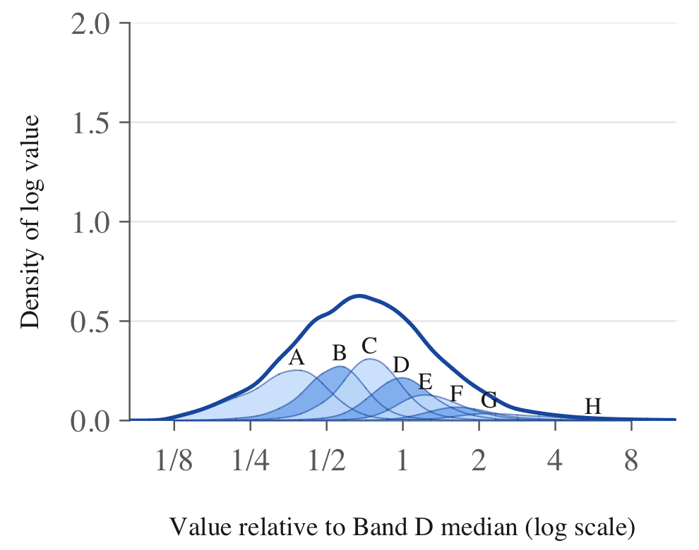
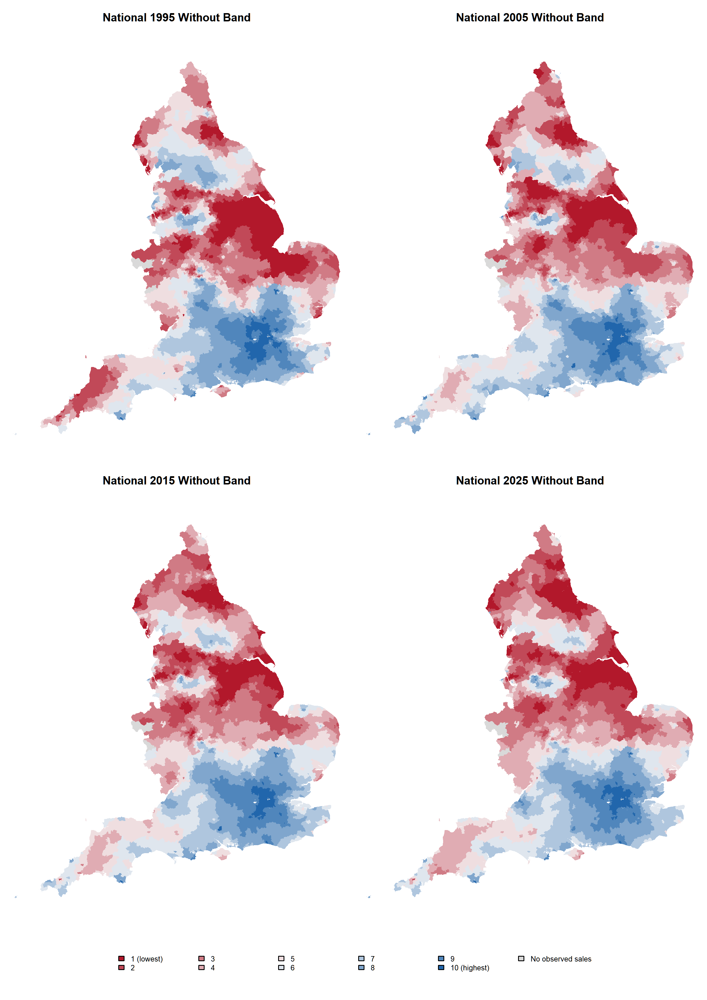
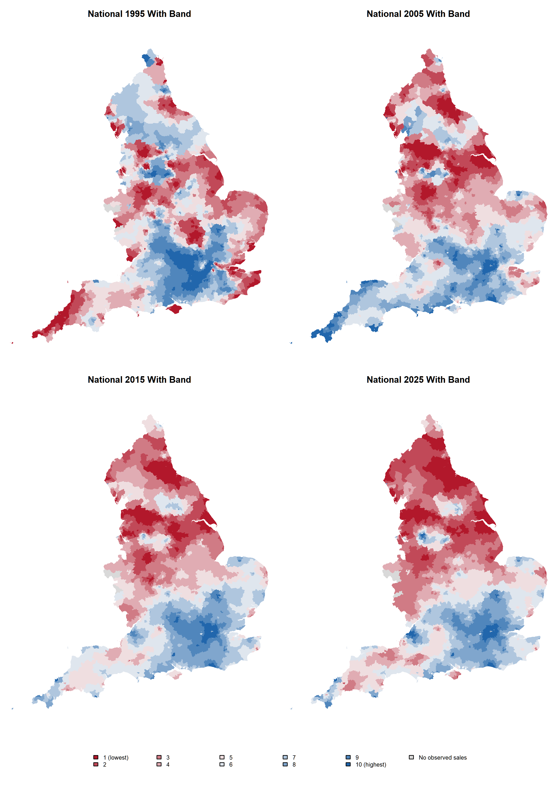

Historical national Suits index
1995–2025, observed prices and annual selected samples. Negative values indicate regressivity relative to property value.
RESEARCH / FINDINGS & METHODS
Band drift, conditional price gaps, regressivity and reform outcomes in England, 1995–2025. Explore the principal results below; specifications and supplementary evidence remain available.
1995–2025 · observed transactions
2022–2025 · reform simulations
The annual band-only R² falls from 74.0% in 1995 to 69.8% in 2025. Old bands retain information, while current prices increasingly vary beyond those classifications.
Council Tax is regressive relative to property value: the 2025 national Suits index is −0.255, compared with −0.168 within charging authorities. Six saved reform scenarios distinguish band reassignment from changes in charging weights.
Read the paper → · Public explanation and interactive tools →
Loading saved research results…
02 / BAND DRIFT
For each year and sample, regress log sale price on band indicators. These annual descriptive regressions are separate from the full hedonic models.
England-wide annual band-only R², 1995–2025. Each year uses the full England sample, with no geographic subgroups.
EPC models with original and additional controls use identical complete-case transactions, so their raw band-only R² is identical. The full-model fits and conditional gaps can differ. Lines describe changing annual transaction samples, rather than a balanced panel of all dwellings.
URBAN ENGLAND EXCLUDING LONDON / 15 NOVEMBER 2026
The decline in annual band-only explanatory power is present in other urban England as well as London. London has a more negative full-period trend point estimate, but the direct London-minus-other-urban slope test is not significant at the conventional 5% level (difference -0.125 percentage points/year; HAC SE 0.070; p=0.086).
03 / COMPARE SIMILAR PROPERTIES
Compare properties after controlling for the stated housing characteristics, continuous time and postcode-district location.
Shading shows pointwise 95% intervals conditional on estimated smoothing parameters. Cross-sample differences are descriptive comparisons; overlapping or separated intervals do not substitute for a test of the difference. These are conditional price associations, not causal effects of a band assignment.
01 / MEASURING REGRESSIVITY
Negative Suits indices indicate regressivity relative to property value; zero indicates proportionality. National and within-authority measures offer complementary perspectives.
1995–2025, observed prices and annual selected samples. Negative values indicate regressivity relative to property value.
Revenue-weighted indices in historical source charging authorities. Historical groups differ from the fixed LAD2026 units used in policy simulations. These are complementary indices, not an additive within/between decomposition.
04 / NATIONAL REFORM OUTCOMES
Compare all six scenarios on the same selected transactions. More negative Suits indices indicate greater regressivity relative to property value. Zero means proportionality. Find your area and original band →
Revenue-weighted local indices. This is not an additive within/between decomposition of the national index.
Income decile 1 is lowest and 10 highest. Fixed 2021 area-level income proxy.
Deprivation decile 1 is least and 10 most deprived. Census household deprivation dimensions, not IMD. Charts use the reform and year selected at the top of this section.
02 / WHY THE CHARGES ARE COMPRESSED
The actual and implied panels use the same official band-stock weights. The implied panel places each band at its statutory proportion of the Band D charge.


The 1991 panel reconstructs values from April-1993 band-stock counts. Later panels use the national main-model sample in the selected year, exclude prices strictly below that year’s type-7 0.5th percentile and retain cutoff ties and the entire upper tail. The 2025 figure retains 558,489 transactions.
Within-band densities use each band’s share of the English dwelling stock at 31 March of that year. Stock weighting adjusts band composition; it does not remove selection within bands. The figure’s low-price filter is separate from the untrimmed model samples and the tax sample’s upper-ETR filter.
Download distribution summary ↓ · Band medians and stock weights ↓
For the four-part public explanation and LAD maps, see Public 1 →
04 / MARKET CONTEXT
Standard deviation of residual log prices from the model without bands. The dispersion can remain large even when conditional band means are ordered.


05 / CHECK THE FINDINGS
The current price models use a temporal basis dimension of 20 and the retained spatial basis. Both band specifications use the same observations within each group. Two new urban-excluding-London models use the same 16,809,332 transactions from the untrimmed England regression sample, 1995–2025.
| Group | Transactions | Years | First R² (%) | 2025 R² (%) | R² trend (NW SE) pp/year | Mid-2025 H–G log points [95% interval] |
|---|---|---|---|---|---|---|
| England | 22,680,611 | 1995–2025 | 74.03 | 69.76 | -0.204 (0.048) | 0.703 [0.689, 0.718] |
| London | 2,353,902 | 1995–2025 | 70.57 | 64.20 | -0.324 (0.093) | 0.726 [0.705, 0.747] |
| Rest of England | 20,326,709 | 1995–2025 | 73.24 | 68.38 | -0.195 (0.053) | 0.640 [0.621, 0.660] |
| EPC · original controls | 2,491,135 | 2013–2025 | 78.52 | 71.96 | -0.280 (0.111) | 0.715 [0.689, 0.741] |
| EPC · additional controls | 2,491,135 | 2013–2025 | 78.52 | 71.96 | -0.280 (0.111) | 0.528 [0.504, 0.551] |
| Repeat-sales sample | 3,703,214 | 1995–2025 | 74.96 | 69.71 | -0.247 (0.044) | 0.571 [0.539, 0.603] |
| Urban | 19,163,234 | 1995–2025 | 73.74 | 69.84 | -0.198 (0.051) | 0.719 [0.703, 0.735] |
| Rural | 3,517,377 | 1995–2025 | 74.29 | 69.88 | -0.165 (0.036) | 0.624 [0.591, 0.657] |
| Urban England excluding London | 16,809,332 | 1995–2025 | 72.35 | 67.49 | −0.199 (0.057) | 0.644 [0.621, 0.668] |
Annual R² is the raw band-only measure. Trend standard errors use the saved Newey–West estimates. Groups with different first years do not share a common trend window. An EPC common sample appears twice because its housing controls differ in the fitted models.
| Group | Specification | Transactions | Adjusted R² | Deviance explained (%) |
|---|---|---|---|---|
| England | With bands | 22,680,611 | 0.895710 | 89.575 |
| England | Without bands | 22,680,611 | 0.787434 | 78.752 |
| London | With bands | 2,353,902 | 0.917126 | 91.738 |
| London | Without bands | 2,353,902 | 0.847409 | 84.788 |
| Rest of England | With bands | 20,326,709 | 0.887248 | 88.730 |
| Rest of England | Without bands | 20,326,709 | 0.772322 | 77.243 |
| EPC · original controls | With bands | 2,491,135 | 0.880633 | 88.082 |
| EPC · original controls | Without bands | 2,491,135 | 0.755984 | 75.636 |
| EPC · additional controls | With bands | 2,491,135 | 0.903238 | 90.339 |
| EPC · additional controls | Without bands | 2,491,135 | 0.858514 | 85.873 |
| Repeat-sales sample | With bands | 3,703,214 | 0.918422 | 91.862 |
| Repeat-sales sample | Without bands | 3,703,214 | 0.882083 | 88.237 |
| Urban | Without bands | 19,163,234 | 0.795956 | 79.605 |
| Urban | With bands | 19,163,234 | 0.898340 | 89.839 |
| Rural | Without bands | 3,517,377 | 0.765012 | 76.561 |
| Rural | With bands | 3,517,377 | 0.883629 | 88.392 |
| Urban England excluding London | With bands | 16,809,332 | 0.887630 | 88.769 |
| Urban England excluding London | Without bands | 16,809,332 | 0.778045 | 77.817 |
These full-model adjusted R² values differ from annual band-only R². Fit across different samples is not a like-for-like measure of the effect of adding controls.
England, London and the rest of England use the original housing controls. EPC models compare original and additional housing controls on the same 2,491,135 complete cases in 2013–2025. The repeat-sales sample includes 3,703,214 transactions in properties with eligible sales both before and after 2013; later non-energy housing characteristics are held fixed. It is a restricted-sample hedonic regression, not a first-difference repeat-sales estimator.
Urban status is UN1/UF1 and rural status is RLN1/RLF1/RSN1/RSF1 in the supplied official 2021 LSOA classification. Unmatched classifications are not treated as rural; all main-model observations were classified. A postcode district may contain both urban and rural transactions. No EPC-by-urban or repeat-sales-by-rural models have been estimated for this update.
Temporal basis dimension is 20. Spatial dimension is min(300, number of model districts − 1), giving 275 in London. Basis dimensions constrain the representation; estimated penalties determine effective degrees of freedom. The urban/rural estimates use the recorded newer R/mgcv environment. No models were re-estimated to prepare this website.
New fits use R 4.5.0 and mgcv 1.9-3; retained England/London fits used R 3.6.0 and mgcv 1.8-28.
METHODS & SOURCES
This appendix explains the measures, data and saved simulation assumptions behind the atlas. Open a topic below for details.
For example, a £1,000 annual bill on a property sold for £200,000 gives an ETR of 0.5%. Monetary amounts in the atlas are nominal GBP.
| Source | Role in the atlas | Period or reference |
|---|---|---|
| HM Land Registry, Price Paid Data (PPD) | Observed sale prices, sale dates and the transaction universe used to construct the research samples. Repeated sales are separate transactions. | England, 1995–2025 |
| Collected Council Tax valuation-list records | Property-level A–H band assignments linked to transactions. The collected snapshot is not a historical record of every band change. | Retained research snapshot |
| Official local-authority Band D charge tables | Published annual reference charges and the historical fiscal-year charges assigned to transactions. | Annual series; atlas displays 1995–2025 fiscal start years |
| Official Council Tax dwelling-stock tables | England and LAD A–H stock shares, plus the fixed local stock-share targets used for rebanding. | September 2026 |
| ONS LSOA2021 boundaries and retained LAD reference polygons | Fixed display areas for national and local maps. All 33,755 English LSOAs remain visible, including areas without observed sales. | LSOA2021; LAD2025 reference geometry matched to all 296 LAD2026 result codes |
| ONS LSOA2021 to Electoral Ward2026 best-fit lookup | Recognisable ward reference names for neighbourhood labels and search. These labels do not alter analytical areas or sample membership; ward and LSOA boundaries may differ. | 7 May 2026 reference; published 15 October 2026 |
| Retained August-2026 postcode lookup | Unique LSOA-to-LAD2026 links for historical local summaries. Ambiguous links are not assigned arbitrarily. | August 2026 |
| Neighbourhood income and Census household-deprivation measures | Fixed 2021 area characteristics for the distributional reform charts. The income measure is a converted GDP-based area proxy; the per-capita denominator is not fully traced. Deprivation counts Census household deprivation dimensions and is not IMD. | 2021 characteristics |
| Saved paper outputs and six-policy transaction simulations | National and local Suits indices, reform liabilities and comparisons. New website tables aggregate these saved outputs without re-estimating models or changing policy rules. | Reforms: 2022–2025 |
The paper also uses EPC and other housing characteristics in its hedonic analysis. Website tax burdens and reforms use observed sale prices, not predicted prices from those models. Boundary data contain public sector information licensed under the Open Government Licence v3.0.
Sample selection. Each calendar year uses the matched tax sample after excluding only observations strictly above the current-system annual 99.5th ETR percentile. Observations equal to the cutoff and the entire lower tail remain. There is no additional price trimming, winsorisation or policy-specific selection. All six reforms use the same selected observations within each year; no observations are removed because of their simulated tax rate.
Selected reform samples: 2022: 654,649.0; 2023: 525,266.0; 2024: 485,756.0; 2025: 565,375.0. The paper’s untrimmed hedonic sample is a separate analytical sample.
Time. Historical maps group transactions by calendar sale year. Each transaction’s assigned annual liability follows its matched historical fiscal-year charge. A calendar-year mean bill may therefore include liabilities from two fiscal years. The published Band D line chart is indexed by fiscal start year.
LSOA. Neighbourhood results use fixed LSOA2021 boundaries. Their averages describe properties transacting in that year, not all homes or all residents.
LAD. Policy results use the exact saved LAD2026 simulation groups. Historical LAD Explorer means conservatively aggregate LSOAs with a unique official link to a LAD2026 area. There are 33,709 uniquely linked English LSOAs; 46 remain unresolved or ambiguous. In 2025, 559 transactions are excluded from those historical LAD summaries but remain in national and individual-LSOA results. Historical and exact policy LAD means may consequently differ slightly.
Recognisable place names. Labels such as “Beam ward · Barking and Dagenham 020D” combine an ONS 2026 best-fit ward name with the original official LSOA name. Ward names help recognition and search; they are not a renaming of the statistical unit and do not imply matching boundaries. This fixed reference label applies across the atlas’s years. Source: ONS best-fit lookup.
Band shares. “Official 2026 stock” is a fixed dwelling-stock snapshot; it does not change with the year selector. “Selected annual transactions” changes by sale year and counts repeated sales separately. It is not a historical stock estimate. Official LSOA stock shares are not supplied in this atlas.
Missing charges, missing band groups and areas without observations stay missing. A current LAD code’s unavailable early Band D values are not filled by guessing predecessor-authority charges. In the LSOA Explorer, a displayed published Band D series refers to its uniquely linked current LAD, rather than asserting one historical charge route for every neighbourhood transaction.
The Suits index summarises the distribution of tax relative to property value. Properties are ordered by ascending observed sale price. Let x be the cumulative share of total property value and L(x) the corresponding cumulative share of total tax.
Equal sale prices are grouped before constructing the curve. Cumulative value and tax shares include the origin, and the area under the curve is integrated using the trapezoidal rule. Prices determine both the order and the cumulative value shares.
National Suits is calculated across the full selected national sample. Within-authority Suits is a revenue-weighted average of separately calculated authority indices:
Historical indices use the audited historical source charging-authority groups; policy comparisons use fixed LAD2026 groups. Each system uses its own revenue shares. A single-transaction authority group is retained with index zero. The national and within-authority indices are complementary measures; subtracting them does not produce an additive “between-authority Suits” component.
An average ETR level and a Suits index answer different questions. A falling average rate need not imply less regressivity. These are property-value comparisons, not estimates of household-income incidence. Reported indices are point estimates; the atlas does not supply confidence intervals or tests of changes over time.
METHODS & SOURCES
This appendix explains the measures, data and saved simulation assumptions behind the atlas. Open a topic below for details.
These descriptions document the saved scenarios used in the paper. They do not present a forecast of final legislation or household bills. Each scenario is simulated separately in 2022, 2023, 2024 and 2025.
| Option | What changes? | Revenue treatment |
|---|---|---|
| 1 · Scottish multipliers | Retain original A–H bands and apply the Scottish-style upper-band charging proportions. A–D retain the English proportions; E–H use 1.313889, 1.625, 1.958333 and 2.45 relative to D. | Rescale within each LAD transaction sample |
| 2 · Illustrative I/J bands | Retain original bands up to an uprated April-2026 price of £1m. Prices above £1m and up to £2m enter illustrative Band I (multiplier 2.886); prices above £2m enter J (4.628). Other A–H weights remain English. This is an illustrative saved schedule. | Rescale within each LAD transaction sample |
| 3 · High-value surcharge | Add £2,500 for uprated values £2m–<£2.5m; £3,500 for £2.5m–<£3.5m; £5,000 for £3.5m–<£5m; and £7,500 for £5m or above. Values below £2m receive no surcharge. | Additional receipts; no compensating rescaling |
| 4 · Rebanding only | Assign new A–H bands from local transaction-price quantiles targeted to official 2026 LAD stock shares. Retain the English relative charging proportions. | Rescale within each LAD transaction sample |
| 5 · Local multipliers | Keep original A–H assignments. Set preliminary liability weights using within-LAD median sale prices in those original bands. | Rescale within each LAD transaction sample |
| 6 · Rebanding + multipliers | Use the same new bands as Option 4, then calculate the median-price weights within those reclassified bands. | Rescale within each LAD transaction sample |
The English A–H proportions relative to Band D are 6/9, 7/9, 8/9, 1, 11/9, 13/9, 15/9 and 2. The institutional baseline section lists the associated 1991 valuation thresholds.
Price uprating. Options 2 and 3 use observed sale prices uprated with the retained April-2026 adjustment factors, including the saved 3.07% future-growth extrapolation assumption. They do not use hedonic predicted values. For 2025 observations, the factor is approximately 1.022938. Simulated threshold assignment is a research approximation to the saved scenario, not a property-specific official valuation.
Local revenue calibration. For each LAD, first sum current selected-sample bills to obtain baseline revenue Rℓ0. For Options 1, 2, 4, 5 and 6, scale the preliminary weights qis so that their final liabilities sum to that same revenue:
Options 1 and 2 use the transaction’s assigned historical Band D charge multiplied by the scenario proportion as the preliminary weight; this preserves within-modern-LAD historical-charge variation before scaling. Option 4 uses the English multiplier for the new band. Options 5 and 6 use the local median price of the original or reclassified band. Option 3 simply adds its surcharge to the baseline bill.
Rebanding. Cumulative official September-2026 local stock shares define type-7 price-quantile cutoffs within each year’s LAD sample. Only positive-share bands enter the allocation. Prices equal to a cutoff stay in the lower group. Ties and finite samples can make realised shares differ from targets. Fixed 2026 geography and stock targets are applied retrospectively.
Displayed median multipliers. A mapped or charted local multiplier is the band median price divided by the local Band D median. It is a relative weight, not a final bill change. If the local D median is missing, that D-relative schedule stays unavailable; liabilities can still be calculated from observed band medians because the D normalisation cancels during revenue calibration.
The maps and query tables average these quantities over the chosen group. A change from 0.8% to 0.6% is −0.2 percentage points, rather than −0.2%. “Pay more” means an annual bill increase exceeding £0.01; “pay less” means a reduction exceeding £0.01; changes within ±£0.01 are unchanged.
“My original band” query. Groups combine the chosen LAD or LSOA with the property’s original A–H band. The same properties are compared before and after reform. Options 4 and 6 may move properties within one original band into different new bands, so the query reports averages and paying shares, not a single tariff for every resident. Missing area-band groups are shown as “No observations”.
Revenue neutrality applies to each LAD’s selected transaction sample, not to every LSOA or band separately and not to the full housing stock. A LAD’s mean bill change can be zero while many properties pay more and others pay less. There is no redistribution of baseline receipts between LADs.
MODEL DOWNLOADS & VERIFICATION
This edition reconciles the existing atlas with the current saved tax and reform exports and adds the current price-model evidence. The review checks included all 31 annual tax summaries, 24 national reform scenarios, 7,104 LAD-policy-year Suits results, and 800,886 LSOA policy-map records.
Downloads contain exported curves, coefficients and aggregate model diagnostics. Fitted model objects, row identifiers, addresses, postcodes and transaction-level input data are not supplied.
Urban/rural results: all conditional gaps ↓ · urban coefficients ↓ · rural coefficients ↓ · H–G key points ↓ · H–A/H–G key points ↓.
The refresh compares the supplied atlas with current saved numerical exports. It does not repeat the original PPD–VOA or EPC linkage and does not establish the correctness of every original match. LSOA retained counts were checked for all 31 years; historical mean ETRs were independently checked against the four exported manuscript map years. Current band-query LAD totals reconcile with policy sample counts and revenues. Uncertainty for policy differences is not estimated.
The original aggregate maps and geographic definitions remain documented in the tax and reform appendix. Urban/rural model groups do not imply that new urban/rural tax or policy subgroups have been calculated. A matching urban/rural version of the paper’s tax-sample descriptive table requires the separate historical-charge dataset and is not substituted with model-sample statistics.